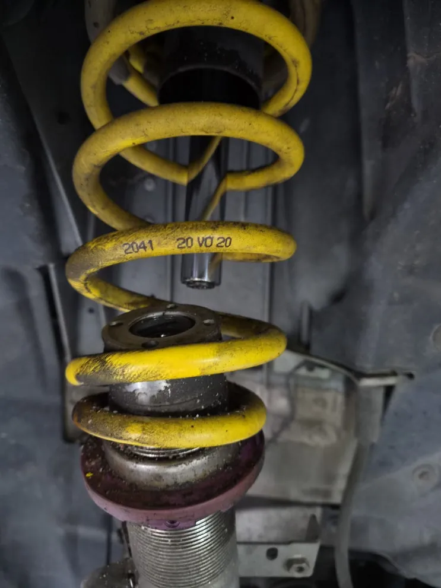
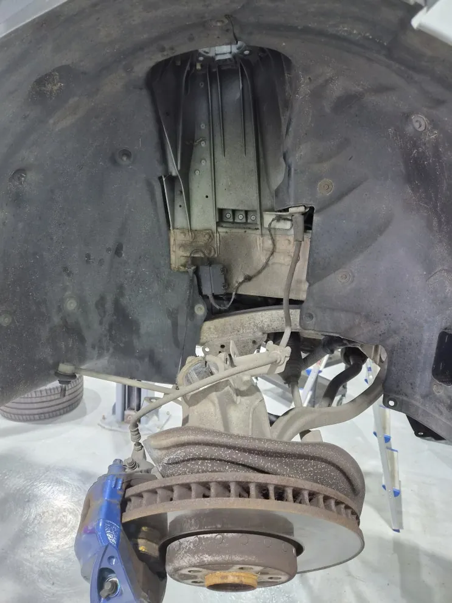
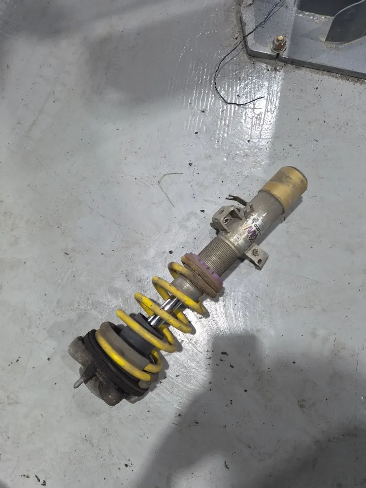
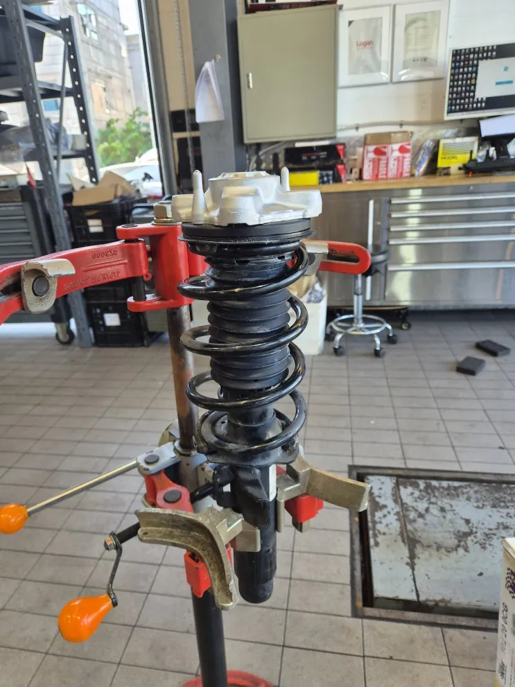
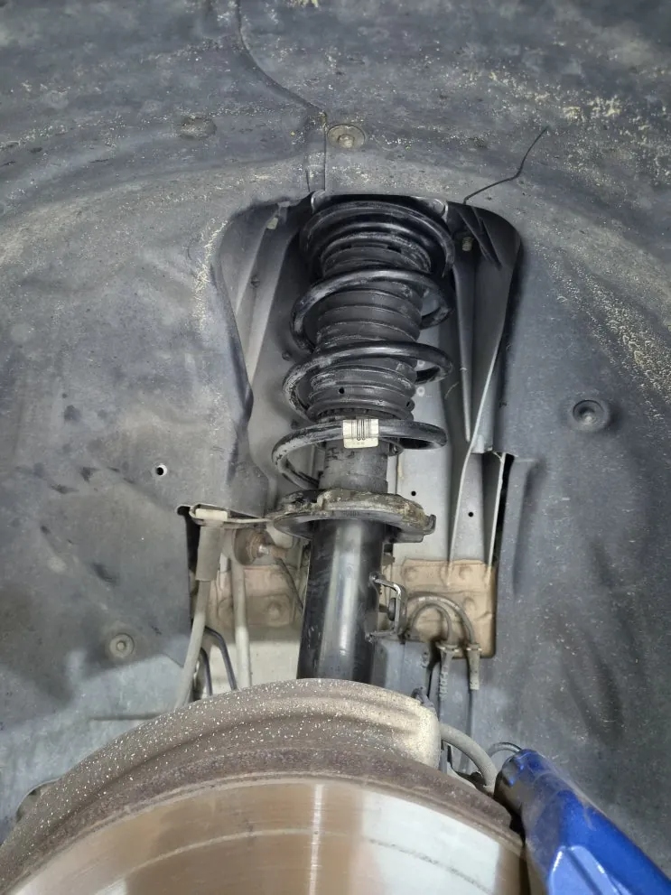
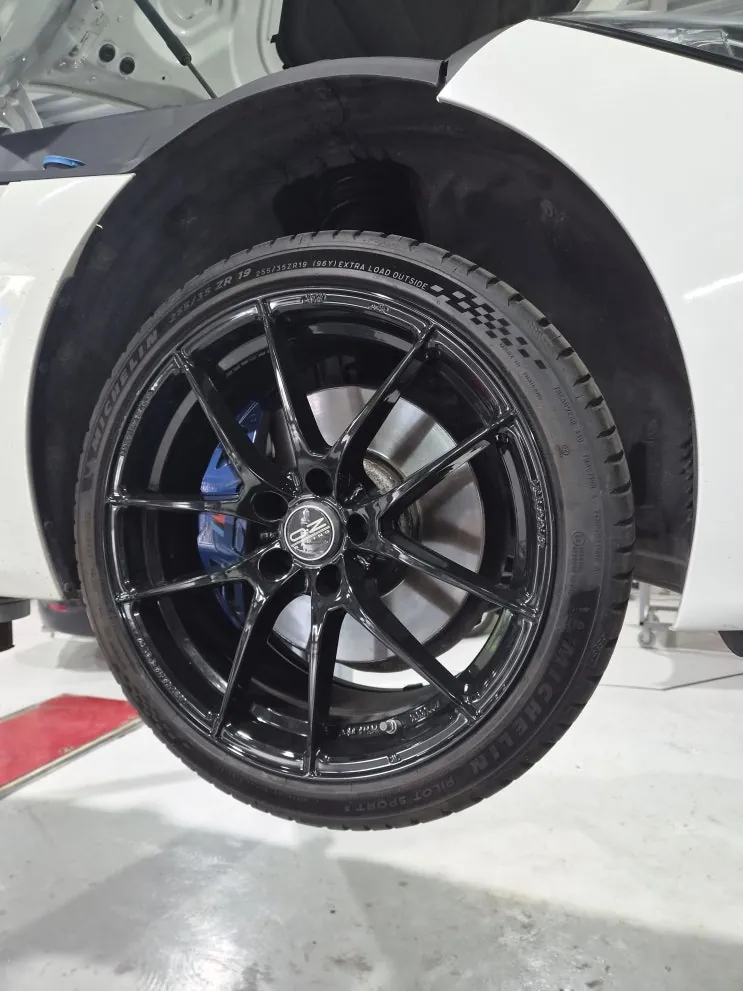
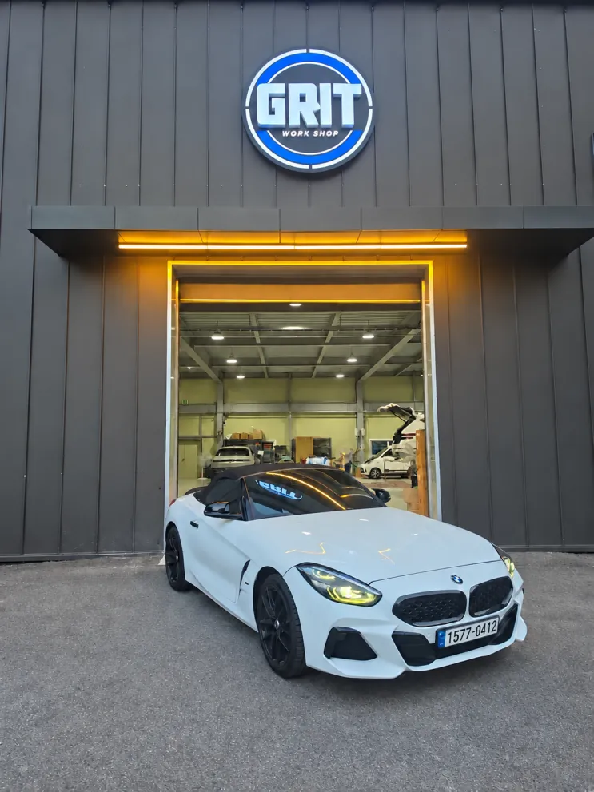

BMW Z4 하체 소음·승차감 불안, 쇽업쇼버 교환
한눈에 보기
하체 소음과 승차감 불안으로 입고된 BMW Z4는 쇽업쇼버 계통이 파손돼 감쇠 기능을 기대하기 어려운 상태였고, 쇽업쇼버 본체·스프링·상단 마운트를 새 부품으로 조립한 어셈블리로 교환한 뒤 휠 얼라인먼트 점검까지 마쳤습니다.
- 차량
- BMW Z4
- 증상
- 주행 중 하체 이상 소음
- 승차감 불안정
- 작업
- 서스펜션 점검
- 쇽업쇼버 어셈블리 탈거
- 스프링 분리
- 휠하우스·브레이크·배선 점검
- 쇽업쇼버·스프링·상단 마운트 신품 조립
- 규정 토크 체결
- 휠 얼라인먼트 점검
- 작업장
- 그릿서비스 · 경기도 파주시 교하로 1312-53, 1동 1층

입고 증상
BMW Z4가 "달릴 때 하체에서 이상한 소리가 나고 승차감이 불안하다"는 증상으로 입고됐습니다. 고객님 설명을 바탕으로 서스펜션 계통을 중심으로 점검하기로 했습니다.


점검·진단
차를 리프트에 올려 하부를 확인한 결과, 쇽업쇼버 계통에서 파손이 보였습니다. 정상적인 감쇠 기능을 기대하기 어려운 상태로 판단해 쇽업쇼버 어셈블리를 교환하기로 했습니다.
쇽업쇼버는 스프링과 함께 차체가 위아래로 출렁이는 것을 잡아 주고, 타이어가 노면에 안정적으로 붙어 있도록 돕는 부품입니다. 내부 오일이 새거나, 마운트가 상하거나, 스프링이 지치는 등 여러 이유로 성능이 떨어지거나 파손될 수 있습니다.


작업 내용
먼저 문제가 있는 쇽업쇼버 어셈블리를 차에서 떼어 냈습니다. 서스펜션 스프링에는 큰 장력이 걸려 있어 그냥 풀면 위험합니다. 스프링 컴프레서로 장력을 안전하게 푼 뒤 쇽업쇼버 본체, 상단 마운트, 스프링 순서로 분리했습니다.
어셈블리를 떼어 낸 김에 휠하우스 안쪽과 브레이크, 하체 배선 상태도 살폈습니다. 주변 부품의 마모와 새는 곳, 체결부 상태를 확인해 다른 이상이 없는지 봤습니다.
교환용으로는 쇽업쇼버 본체, 스프링, 상단 마운트를 모두 새 부품으로 준비했습니다. 컴프레서로 새 스프링을 눌러 둔 상태에서 본체와 상단 마운트를 차례로 조립했고, 부품마다 결합 위치와 방향을 확인한 뒤 체결부를 규정 토크로 조였습니다.


출고 점검
완성한 어셈블리를 차에 달고, 주변 부품과 닿는 곳이 없는지와 체결부 토크를 다시 확인했습니다. 서스펜션 부품을 바꾸면 바퀴 각도가 달라질 수 있어 마지막으로 휠 얼라인먼트를 점검한 뒤 작업을 마쳤습니다.
쇽업쇼버는 겉으로만 봐서는 상태를 알기 어렵습니다. 일반적으로 하체 소음, 과속방지턱에서 충격이 커진 느낌, 코너에서 차체 흔들림 증가, 차가 한쪽으로 기울어 보임, 쇽업쇼버 주변 오일 흔적, 타이어 편마모 같은 증상이 있으면 서스펜션 점검을 받아 보시는 것이 좋습니다. 그대로 두면 승차감뿐 아니라 타이어와 다른 하체 부품까지 더 빨리 닳을 수 있습니다.

자주 묻는 질문
쇽업쇼버를 교환한 뒤 휠 얼라인먼트도 봐야 하나요?
서스펜션 부품을 떼었다 달면 바퀴가 노면에 닿는 각도가 달라질 수 있어, 교환 후 휠 얼라인먼트를 점검하는 것이 일반적입니다.
Z4, 비슷한 증상이라면 사진부터 보내 주세요
파주·운정·교하·금촌 어디서든 전화나 카톡으로 상태를 먼저 알려 주시면 확인 후 안내해 드립니다. 카톡에는 손상 부위가 보이게 찍은 사진을 함께 보내 주세요.
그릿서비스 · 경기도 파주시 교하로 1312-53, 1동 1층 · 네이버 지도
이 작업의 원문 기록: 네이버 블로그에서 보기